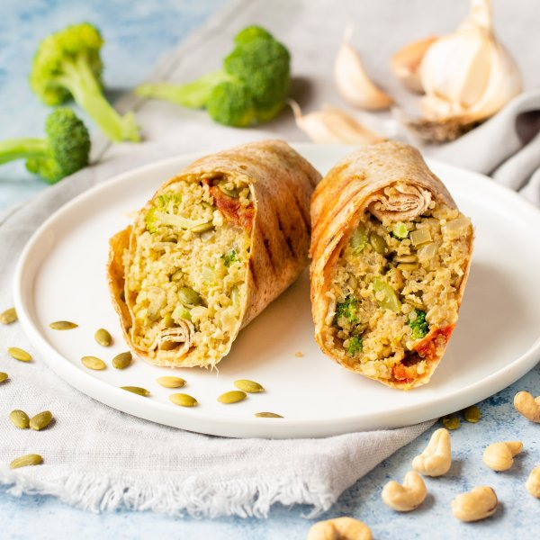

Cheesy Vegan Broccoli & Cashew Quinoa Burrito with Sun-dried Tomatoes

Prep Time
35 min
Nutrition (per serving)
650.4 kcalCalories
26.7 gProtein
78.1 gCarbs
28.3 gFat
Full nutrition table
| Calories | 650.4 kcal |
| Total fat | 28.3 g |
| Saturated fat | 4.9 g |
| Trans fat | 0.8 g |
| Cholesterol | 0 mg |
| Sodium | 562.7 mg |
| Carbohydrates | 78.1 g |
| Fiber | 12.4 g |
| Sugars | 10.9 g |
| Protein | 26.7 g |
| Potassium | 874.6 mg |
| Calcium | 294.7 mg |
| Iron | 7.5 mg |
| Vitamin A | 671.8 IU |
| Vitamin C | 92.2 mg |
| Vitamin D | 26.9 IU |
Cookware
Ingredients
- 8 fl ozalmond milk, unsweetened
- 2 crownsbroccoli
- ⅔ cupcashews, roasted unsalted
- 2 stickscelery
- 4 clovesgarlic
- 4large flour tortillas
- ½ cupnutritional yeast flakes
- ¼ cuppumpkin seeds
- ⅔ cupquinoa
- 16sun-dried tomatoes, oil-packed
- 1 mediumyellow onion
- Dijon mustard
- extra virgin olive oil
- onion powder
- salt
- white wine vinegar
Steps
- Boil water in a kettle. (If you do not have a kettle, boil water in a saucepan, starting with hot tap water.) In a small bowl, pour boiling water over cashews and set aside to soak.1 ⅓ cup water
⅔ cup cashews, roasted unsalted - In a small saucepan, combine quinoa and water. Bring to a boil. Reduce heat to low, cover, and cook for 15 minutes. Remove from heat and let stand, covered, for 5 minutes.⅔ cup quinoa
1 ⅓ cup water - Meanwhile, peel and small dice onion. Peel and mince garlic.1 medium yellow onion
2 cloves garlic - Preheat a large skillet over medium heat. Add oil and swirl to coat the bottom.4 tsp extra virgin olive oil
- Add onions and garlic to the skillet and sauté until the onions are tender, about 5 minutes.
- Meanwhile, wash, dry, and medium dice celery and broccoli.2 sticks celery
2 crowns broccoli - Roughly chop the sun-dried tomatoes.16 sun-dried tomatoes, oil-packed
- Increase the heat to medium-high and add the celery, broccoli, and sun-dried tomatoes to the skillet. Sauté until broccoli is tender, about 8 minutes.
- Drain the cashews and transfer them to a blender.
- Peel garlic. Add to the blender along with almond milk, nutritional yeast, Dijon, vinegar, salt, and onion powder. Blend until smooth; add water, 1 tbsp at a time, if needed, to make a thick sauce.2 cloves garlic
8 fl oz (1 cup) almond milk, unsweetened
½ cup nutritional yeast flakes
4 tsp Dijon mustard
4 tsp white wine vinegar
1 tsp salt
½ tsp onion powder - Add the cooked quinoa, pumpkin seeds, and sauce to the vegetables in the skillet and stir to combine.¼ cup pumpkin seeds
- Lay the tortillas on a flat surface and divide vegetable mixture between them. Roll tightly to close, folding in the ends.4 large flour tortillas
- Return the skillet or a grill pan to medium-high heat.
- Working in batches if necessary, place wraps on the grill and flip every 1-2 minutes, until tortilla is crispy and golden.
- To serve, cut wraps on an angle and divide between plates. Enjoy!